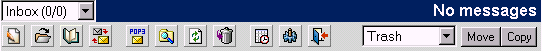
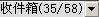

Open Webmail 使用指南
>>
主工具条
利用工具条能够使你快速地执行不同对象的操作。每个邮件箱都有对应的工具条。
这是主工具条：

你可以使用这个表格来当作这些按钮的参考:
| 项目/按钮 |
名称 |
意义 |
|
 | 邮件箱选单 | 显示当前邮件箱以及未读/总邮件数 |
 | 撰写新邮件 | 允许你写一封新的电子邮件 |
 | 邮件箱管理 | 允许你查看、编辑、删除、建立邮件箱 |
 | 地址簿 | 编缉地址簿 |
 | 邮件过滤规则 | 允许你设定邮件规则过滤进来的电子邮件 |
 | POP3 | 收取外部POP3服务器上的电子邮件 |
 | 高级搜索 | 针对邮件进行更详细的搜索 |
|
| 刷新 | 重新载入当前页 |
 | 日程表 | 打开日程表，允许你设定每日的详细清单 |
|
| 网络磁盘 | 打开网络磁盘 |
 | 个人模版 | 允许你改变自己个人偏好的设定 |
|
| 退出 | 退出Open Webmail |
 | 移至废件箱 | 把选定的邮件移至废件箱 |
|